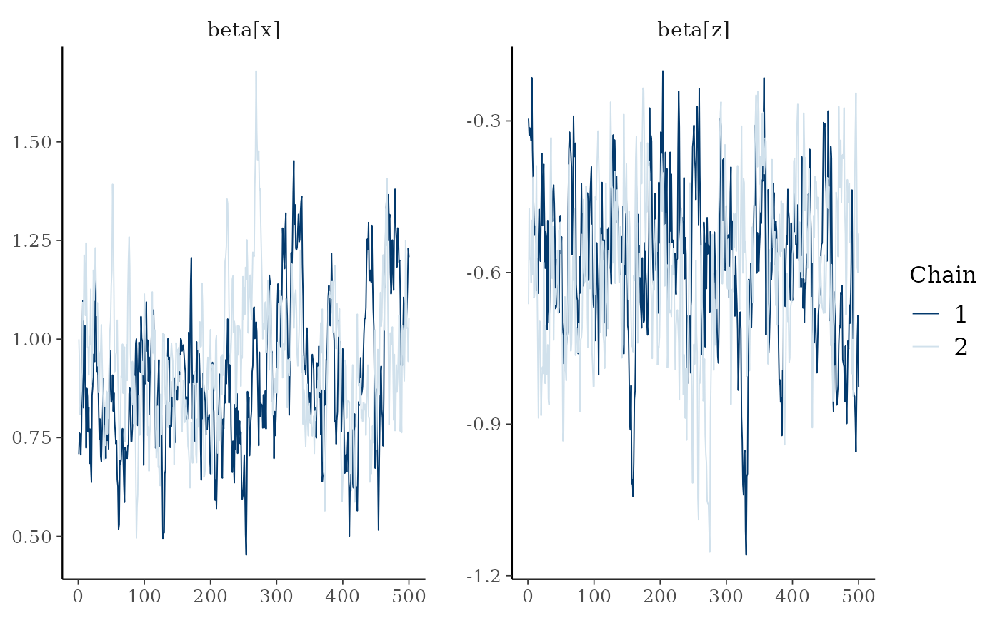
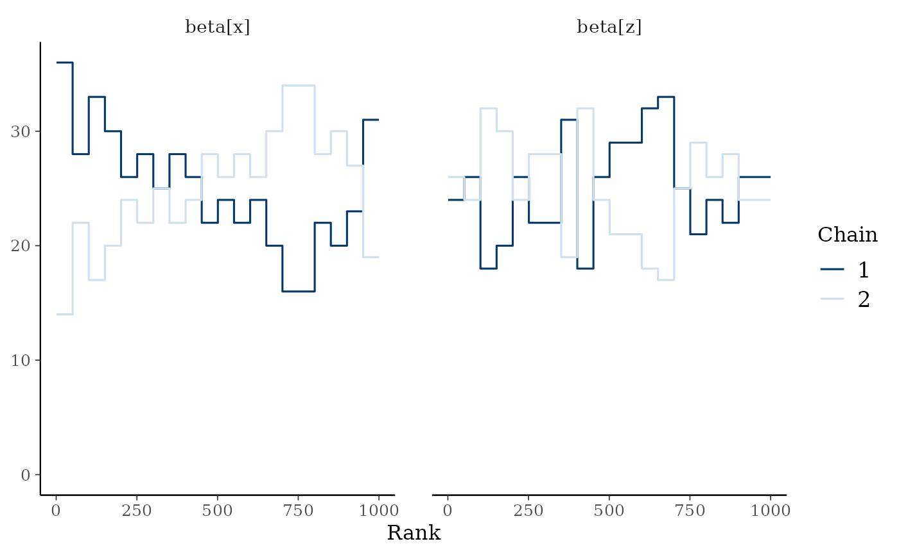
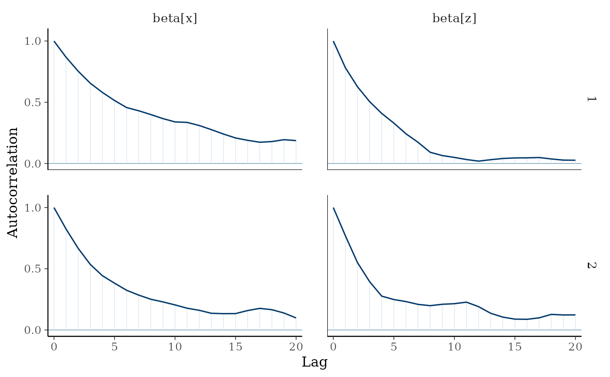
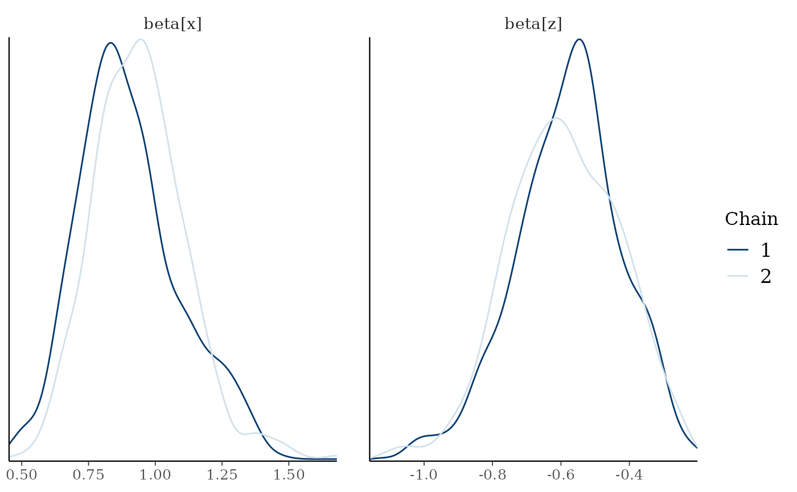
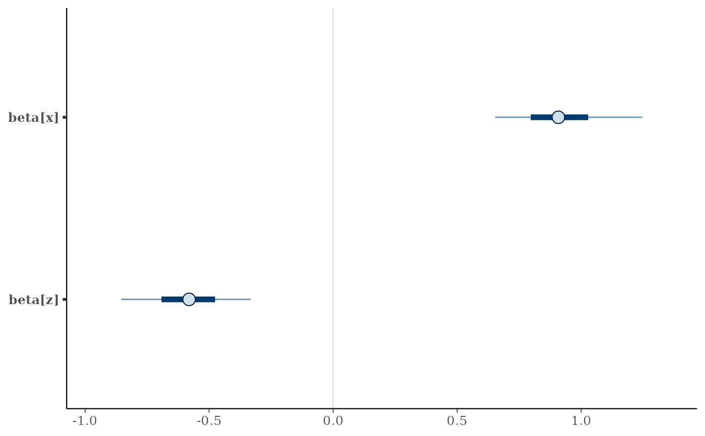
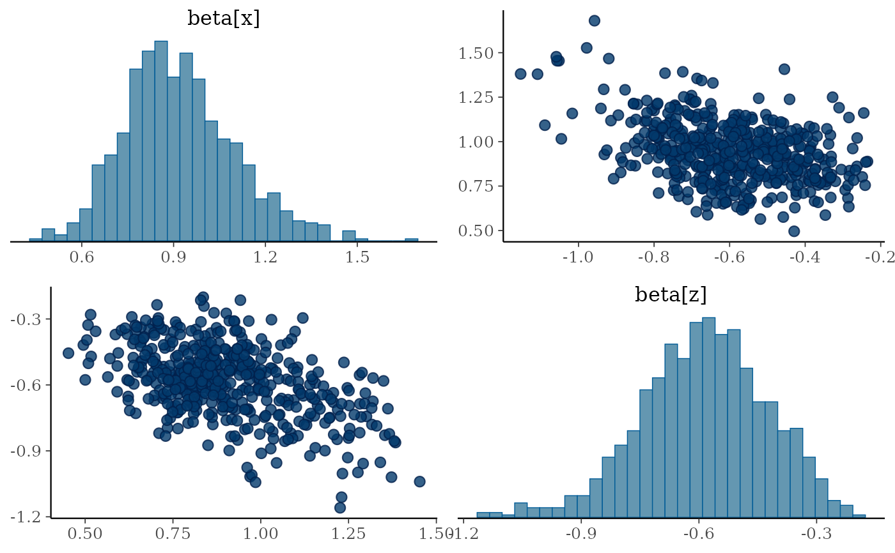

Creates a standard posterior diagnostic or uncertainty plot with bayesplot.
Arguments
- x
[
RprobitB_fit]
Fitted choice model.- y
[
NULL]
Currently not used.- type
[
character(1)]
The plot to create:"trace"draws the sampled values of each chain over the iterations."rank"compares the chains through the ranks of their draws."acf"draws the autocorrelation within each chain."density"overlays the marginal posterior density of each chain."interval"draws posterior point estimates with credible intervals."pairs"draws bivariate scatter plots of the variables.
- variables
[
character()|NULL]
Posterior variables to include.NULLincludes all varying model parameters and excludes individual coefficients and latent allocations.- ...
Further arguments passed to the selected bayesplot function.
Examples
set.seed(1)
model <- fit(
choice ~ x + z | 0, dgp_parameters = list(beta = c(x = 1, z = -0.5)),
chains = 2
)
### convergence and mixing of the chains
plot(model, type = "trace")

plot(model, type = "rank")

plot(model, type = "acf")

### marginal and joint posterior distributions
plot(model, type = "density")

plot(model, type = "interval")

plot(model, type = "pairs")
